일반기계기사 (2007-05-13 기출문제)
1과목: 재료역학
1. 바깥지름 4 cm, 안지름 2 cm의 속이 빈 원형축에 10 MPa의 최대 전단응력이 생기도록하려면 비틀림 모멘트의 크기는 몇 Nㆍm로 해야 하는가?
- 50
- 212
- 135
- 118
(정답률: 57%)

2. 원형 단면보의 임의 단면에 걸리는 전체 전단력이 V일 때, 단면의 중립 축 위에 생기는 최대 전단응력은?
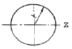
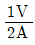
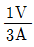
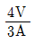
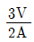
(정답률: 53%)
3. 그림과 같이 초기온도 20℃, 초기길이 19.95 cm, 지름 5 cm인 봉을 간격이 20 cm인 두 벽면 사이에 넣고 봉의 온도를 220℃로 가열했을 때 봉에 발생되는 응력은 몇 MPa 인가? (단, 봉의 선팽창계수 α=1.2 × 10-5/℃ 이고, 탄성계수 E= 210 GPa이다.)
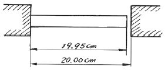
- 0
- 25.2
- 257
- 504
(정답률: 57%)
4. 평면 응력상태에 있는 재료 내부에 서로 직각인 두 방향에서 수직 응력 σx, σy가 작용할 때 생기는 최대 주응력과 최소 주응력을 각각 σ1, σ2라 하면 다음 중 어느 관계식이 성립하는가?
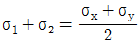
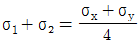
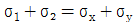
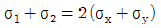
(정답률: 39%)
5. 탄성 한도내에서 인장 하중을 받는 막대에 발생하는 응력이 2배가 되면 단위 체적속에서 저장되는 변형 에너지는 몇배가 되는가? (단, 탄성계수는 일정함)
- 1/2배
- 2배
- 1/4배
- 4배
(정답률: 45%)
6. 다음 그림과 같이 집중하중을 받는 일단 고정, 타단 지지된 보에서 고정단에서의 모멘트는?
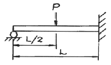
- 0
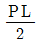
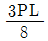
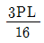
(정답률: 43%)
7. 주평면에 관한 설명으로 옳은 것은?
- 주평면에서 전단응력의 최대값은 주응력의 1/2 이다.
- 주평면에는 전단응력은 작용하지 않고 수직응력만 작용한다.
- 주평면에는 수직응력과 전단응력의 합이 작용한다.
- 주평면에서 수직응력은 작용하지 않고 최대 전단응력만 작용한다.
(정답률: 44%)
8. 안지름 400 mm, 내압 8 MPa 인 고압가스 용기의 뚜껑을 8 개의 볼트로 같은 간격으로 조일 때 각 볼트의 지름은 최소 몇 mm 로 해야 하는가? (단, 볼트의 허용 인장응력은 45 MPa로 한다.)
- 20
- 40
- 60
- 80
(정답률: 7%)
9. 지름 10 cm인 연강봉(탄송계수 Es=210 GPa)이 외경 11 cm, 내경 10 cm인 구리관(탄성계수 Ec=150 GPa)사이에 끼워져 있다. 양단에서 강체평판으로 10 kN의 압축하중을 가할 때 연강봉과 구리관에 생기는 응력비 σs/σc의 값은?
- 5/6
- 5/7
- 6/5
- 7/5
(정답률: 41%)
10. 보기와 같은 등분포 하중의 단순지지보에서 A의 보가 B의 보 보다 최대 처짐이 몇 배나 되는가? (단, B 보의 등분포 하중은 A 보의 2배이고, B 보의 길이는 A 보의 1/2이다.)
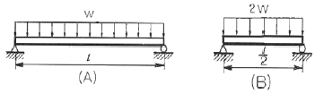
- 4
- 8
- 12
- 16
(정답률: 43%)
11. 그림과 같은 직사각형 단면의 짧은 기둥에서 점 P에 압축력 100 kN을 받고 있다. 단면에 발생하는 최대 압축응력은 몇 MPa 인가?
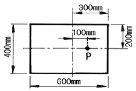
- 0.83
- 8.3
- 1.04
- 10.4
(정답률: 10%)
12. 그림과 같이 길이 3 m, 단면적 500 mm2인 재료의 윗부분이 고정되어 있고, 이것에 500 N의 추를 200 mm의 높이에서 낙하시켜 충격을 준다. 재료의 최대 신장량은 몇 mm 인가? (단, 자중 및 마찰은 무시하고, 탄성계수는 210 GPa이다.)
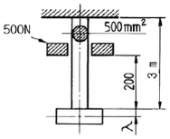
- 2.8
- 3.4
- 2.4
- 3.6
(정답률: 21%)
13. 단면의 2차모멘트가 250 cm4인 I 형강 보가 있다. 이 보의 높이가 20 cm이고 굽힘모멘트가 2500 Nㆍm을 받을 때 최대 굽힘응력은 몇 MPa 인가?
- 50
- 100
- 200
- 400
(정답률: 31%)
14. 그림과 같은 압력계의 안전변에서 지름 5cm의 방출구가 있고 스프링의 자유길이는 25 cm이며, 스프링상수는 6 kN/m 이다. 압력이 최소 얼마 이상일 때 이 변이 열리겠는가?
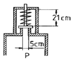
- 123 kN/m2
- 103 kN/m2
- 113 kN/m2
- 133 kN/m2
(정답률: 16%)
15. 지름 10 mm, 길이 2 m인 둥근 막대의 한끝을 고정하고 타단을 자유로이 10° 만큼 비틀었다면 막대에 생기는 최대 전단응력은 몇 MPa인가? (단, 재료의 전단탄성계수 G = 84 GPa이다.)
- 18.3
- 36.6
- 54.7
- 73.2
(정답률: 52%)
16. 두께 5 mm의 연가안으로 2 MPa의 내압에 견디는 원통을 만들려고 한다. 허용응력이 60 MPa이라면 안지름은 최대 몇 cm 로 하면 되겠는가?
- 30
- 60
- 15
- 25
(정답률: 35%)
17. 어떤 재료의 탄성계수 E = 210 GPa이고 전단 탄성계수 G = 83 GPa이라면 이 재료의 포아송 비는?
- 0.265
- 0.115
- 1.0
- 0.435
(정답률: 44%)
18. 반원 부재에 그림과 같이 R/2지점에 하중 P가 작용할 때 지지점 B에서의 반력은?
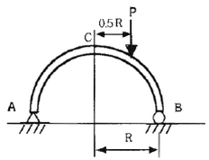
- P/4
- P/2
- 3P/4
- P
(정답률: 42%)
19. 외팔보가 그림과 같이 등분포하중과 집중하중을 받고 있다.
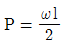
일 때 이 보의 전단력선도는?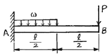
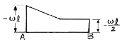
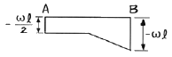
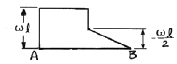
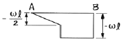
(정답률: 28%)
20. 길이가 L인 외팔보의 중앙에 집중하중 P가 작용할 때, 자유단 C에서의 최대 처짐은? (단, E는 탄성계수, I는 단면 2차 모멘트이다. )
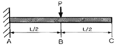
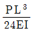
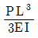
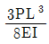
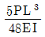
(정답률: 46%)
2과목: 기계열역학
21. 어떤 냉매를 사용하는 냉동기의 P-h 선도가 다음과 같을 때 성능계수는 약 얼마인가? (단, 이 냉매의 p-h 선도에서 h1 = 1638 kJ/kg, h2 = 1983 kJ/kg, h3 = h4 =559 kJ/kg 이다.)
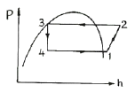
- 1.5
- 3.1
- 5.2
- 7.9
(정답률: 49%)
22. 온도 5℃ 와 35℃ 사이에서 작동되는 냉동기의 최대 성능계수는?
- 10.3
- 5.3
- 7.3
- 9.3
(정답률: 54%)
23. 어떤 냉장고에서 질량유량 80kg/hr 의 냉매가 17 kJ/kg의 엔탈피로 증발기에 들어가 엔탈피 36kJ/kg가 되어나온다. 이 냉장고의 냉동능력은?
- 1220 kJ/kg
- 1800 kJ/kg
- 1520 kJ/kg
- 2000 kJ/kg
(정답률: 25%)
24. 오토사이클(Otto cycle)의 압축비 ε = 8 이라고 하면 이론 열효율은 약 몇 ％ 인가? (단, k = 1.4 이다.)
- 36.8 ％
- 46.7 ％
- 56.5 ％
- 66.6 ％
(정답률: 40%)
25. 압력이 106N/m2, 체적이 1m3인 공기가 압력이 일정한 상태에서 4×105 J의 일을 하였다. 변화 후의 체적은 약 얼마인가?
- 1.4m3
- 1.0m3
- 0.6m3
- 0.4m3
(정답률: 46%)
26. 실제 기체가 이상기체에 가장 가까울 때는?
- 온도가 높고 압력이 낮을 때
- 온도가 낮고 압력이 낮을 때
- 온도가 높고 압력이 높을 때
- 온도가 낮고 압력이 높을 때
(정답률: 19%)
27. 질량 1 kg의 공기가 밀폐계에서 압력과 체적이 100 kPa, 1m3 이었는데 폴리트로픽 과정을 거쳐 체적이 0.5m3 이 되었다. 최종 온도와 내부에너지의 변화량은 각각 얼마인가? (단, 공기의 R=287J/kg K, Cv=718J/kg K, Cp=100J/kg K, k=1.4, n=1.3이다.)
- T2=459.7 K, △U=111.3 kJ
- T2=459.7 K, △U= 79.9 kJ
- T2=428.9 K, △U= 80.5 kJ
- T2=428.9 K, △U= 57.8 kJ
(정답률: 15%)
28. 어떤 시스템이 변화를 겪는 동안 주위의 엔틀피가 5kJ/K 감소하였다. 시스템의 엔트로피 변화로 가능한 것은?
- 2 kJ/K 감소
- 5 kJ/K 감소
- 3 kJ/K 증가
- 6 kJ/K 증가
(정답률: 18%)
29. 두께 10mm, 열전도율 45 kJ/mh℃인 강판의 두 면의 온도가 각각 300℃, 50℃ 일 때 전열 면 1m2당 1시간에 전달되는 열량은?
- 1125000 kJ
- 1425000 kJ
- 925000 kJ
- 1625000 kJ
(정답률: 43%)
30. 랭킨사이클의 열효율을 높이는 방법이 아닌 것은?
- 과열기를 설치하여 과열한다.
- 열공급 온도를 상승시킨다.
- 열 방출온도를 상승시킨다.
- 재열(reheat)한다.
(정답률: 42%)
31. 한여름 낮 주차된 차량의 내부 온도는 외부보다 높은 경우가 많다. 어떤 이유인가?
- 태양으로부터의 복사열로 인해서
- 대류 열전달이 활발히 일어나기 때문에
- 복사에너지가 존재하지 않으므로
- 차량 내부에 자연대류가 생성되어서
(정답률: 34%)
32. 8℃의 완전가스로 가역단열압축하여 그 체적을 1/5로 하였을 때 가스의 온도는 몇 ℃로 되겠는가? (단, k = 1.4 이다.)
- -125℃
- 294℃
- 222℃
- 262℃
(정답률: 35%)
33. 밀폐 시스템이 압력 P1 = 2 bar, 체적 V1 = 0.1 m3 인 상태에서 P2 = 1 bar, V2 = 0.3 m3인 상태까지 가역 팽창 되었다. 이 과정이 P-V 선도에서 직선으로 표시된다면 이 과정동안 시스템이 한 일은?
- 10 kJ
- 20 kJ
- 30 kJ
- 45 kJ
(정답률: 40%)
34. 어느 발명가가 바닷물로부터 매시간 1800 kJ의 열량을 공급받아 0.5 kW 출력의 열기관을 만들었다고 주장한다면, 이 사실은 열역학 제 몇 법칙에 위반 되겠는가?
- 제 0법칙
- 제 1법칙
- 제 2법칙
- 제 3법칙
(정답률: 43%)
35. 500℃와 20℃의 두 열원 사이에 설치되는 열기관이 가질 수 있는 최대의 이론 열효율(％)은 약 얼마인가?
- 4％
- 38％
- 62％
- 96％
(정답률: 46%)
36. 대기압이 750 mmHg 이고, 보일러의 압력계가 12 kgf/cm2로 지시하고 있을 경우, 이 압력을 절대압력으로 환산하면 약 몇 kgf/cm2 인가?
- 10.02
- 13.02
- 20.04
- 25.06
(정답률: 29%)
37. 포화액체와 포화증기의 구부이 없어지는 상태가 물의 경우 고온고압에서 나타난다. 이 상태를 무엇이라고 부르는가
- 삼중점
- 포화점
- 임계점
- 비점
(정답률: 46%)
38. 증기 터빈으로 질량 유량 1 kg/s, 엔탈피 h1=3500 kJ/kg의 수증기가 들어온다. 중간 단에서 h2=3100 kJ/kg의 수증기가 추출되며 나머지는 계속 팽창하여 h3=2500 kJ/kg 상태로 출구에서 나온다. 이때 열손실은 없으며, 위치 에너지 및 운동 에너지의 변화가 없다. 총 터빈 출력은 900 kW이다. 중간 단에서 추출되는 수증기의 질량 유량은?
- 0.167 kg/s
- 0.323 kg/s
- 0.714 kg/s
- 0.886 kg/s
(정답률: 27%)
39. 효율이 85％인 터빈에 들어갈 때의 증기의 엔탈피가 3390 kJ/kg이고, 가역 단열과정에 의해 팽창할 경우에 출구에서의 엔탈피가 2135 kJ/kg이 된다고 한다. 운동에너지의 변화를 무시할 경우 이 터빈의 실제 일은 몇 kJ/kg인가?
- 1476
- 1255
- 1067
- 906
(정답률: 46%)
40. 다음 엔트로피에 관한 설명 중 맞는 것은?
- Clausius 방정식에 들어가는 온도 갑슨 절대온도(K)와 섭씨온도(℃)를 모두 사용할 수 있다.
- 엔트로피는 경로에 따라 값이 다르다.
- 가역 과정의 열량은 h-s 선도 상에서 과정 밑 부분의 면적과 같다.
- 관계식에서 엔트로피 생성 항은 항상 양수 이다.
(정답률: 0%)
3과목: 기계유체역학
41. 안지름이 10 cm인 매끈한 관을 통하여 40℃의 물이 흐르고 있다. 이 관내의 유속이 0.01273 m/s일 때 400 m 길이에서 손실수두를 계산한 것은? (단, 40℃의 물의 동점성계수는 0.658×10-6m2/s 이다.)
- 0.51×10-3 m
- 1.09×10-3 m
- 4.26×10-3 m
- 5.08×10-3 m
(정답률: 34%)
42. 다음 중 무차원수가 되는 것은? (단, ρ:밀도, μ:점성계수, F:힘, Q:유량, V:속도)
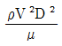
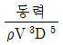
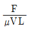
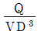
(정답률: 38%)
43. 다음 중 유량을 측정하기 위한 것이 아닌 것은?
- 오리피스(orifice)
- 위어(weir)
- 벤튜리미터(venturi meter)
- 피에조미터(piezo meter)
(정답률: 41%)
44. 안지름이 20 mm인 수평으로 놓인 곧은 파이프 속에 점성계수 0.4 N·s/m2, 밀도 900 kg/m3인 기름이 유량 2×10-5m3/s 로 흐르고 있을 때, 파이프 내의 10 m 떨어진 두지점 간의 압력강하는 몇 kPa 인가?
- 10.2
- 20.4
- 30.6
- 40.8
(정답률: 35%)
45. 수평 원관 내에 물이 층류로 흐르고 있을 때 평균속도가 10 m/s라면 최대속도는 몇 m/s 인가?
- 10
- 15
- 20
- 40
(정답률: 35%)
46. 점성계수가 0.25 kg/(m·s)인 유체가 지면과 수평으로 놓인 평판 위를 흐른다. 평판 근방의 속도 분포가 u = 5.0-100(0.3-y)2일 때 평판에서의 전단응력은? (단, y(m)는 평판면에 수직 방향의 좌표이고, u(m/s)는 평판 근방에서 유체가 흐르는 방향의 속도이다.)
- 3 Pa
- 30 Pa
- 1.5 Pa
- 15 Pa
(정답률: 49%)
47. 직경이 10 cm 인 수평 원관으로 3 km 떨어진 곳에 원유(점성계수 μ=0.02 Pa·s, 비중 s=0.86)를 0.2m3/min 의 유량으로 수송하기 위해서 필요한 동력은 몇 W 인가?
- 127
- 271
- 712
- 1270
(정답률: 12%)
48. 다음 체적탄성계수에 대한 설명 중 틀린 것은?
- 체적탄성계수가 크다는 것은 어떤 체적을 압축하는 데 큰 압력이 필요하다는 뜻이다.
- 체적탄성계수의 차원은 Pa 이다.
- 체적탄성계수가 동일할 때, 밀도가 큰 액체 속에서의 음속이 더 크다.
- 밀도가 동일할 때, 체적탄성계수가 큰 액체 속에서의 음속이 더 크다.
(정답률: 29%)
49. 속도 3m/s로 움직이는 평판에 이것과 같은 방향으로 수직하게 10m/s의 속도를 가진 제트가 충돌한다. 분류가 평판에 미치는 힘 F는 얼마인가? (단, 유체의 밀도를 ρ라 하고 제트의 단면적을 A라 한다.)
- F = 10ρA
- F = 100ρA
- F = 7ρA
- F = 49ρA
(정답률: 43%)
50. 다음과 같은 수평으로 놓인 노즐이 있다. 노즐의 입구는 면적이 0.1m2이고 출구의 면적은 0.02m2이다. 정상, 비압축성이며 점성의 영향이 없다면 출구의 속도가 50 m/s일 때 입구와 출구의 압력차 (P1-P2)는 몇 kPa인가? (단, 이 공기의 밀도는 1.23 kg/m3 이다.)
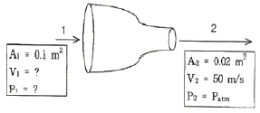
- 1.48
- 14.8
- 2.96
- 29.6
(정답률: 31%)
51. 밀도가 800 kg/m3인 원통형 물체가 그림과 같이 1/3 이 수면 위로 떠있는 것이 관측되었다. 이 액체의 비중은?
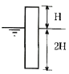
- 0.2
- 0.67
- 1.2
- 1.5
(정답률: 22%)
52. 어떤 기름의 동점성계수가 2.5 stokes이고, 비중은 2.45이다. 점성계수는 몇 N·s/m2인가? (단, 1 stoke = 1 cm2/s 이다.)
- 6.125
- 0.6125
- 0.01
- 0.01
(정답률: 44%)
53. 내경 30 cm의 원관 속을 절대압력 0.32 MPa, 온도 27 ℃인 공기가 4 kg/s로 흐를 때 이 원관속을 흐르는 공기의 평균속도는? (단, 공기의 기체상수 R = 287 J/kg·K 이다)
- 약 15.2 m/s
- 약 20.3 m/s
- 약 25.2 m/s
- 약 32.5 m/s
(정답률: 38%)
54. 지름이 8 mm인 중공 물방울의 내부 압력(게이지 압력)은? (단, 물의 표면 장력은 0.075 N/m이다.)
- 37.5 Pa
- 75 Pa
- 0.037 Pa
- 0.075 Pa
(정답률: 29%)
55. 부차적 손실계수 값이 5인 밸브를 Darcy의 관마찰계수가 0.025이고 지름이 2 cm인 관으로 환산한다면 관의 등가 길이는 몇 m인가?
- 4
- 0.4
- 2.5
- 0.25
(정답률: 41%)
56. 이상 유체를 정의한 것 중 가장 옳은 것은?
- 실제 유체이다.
- 뉴턴 유체이다.
- 점성마 없는 유체이다.
- 점성이 없는 비압축성 유체이다.
(정답률: 42%)
57. 그림과 같은 수문(bxh=3m2m)이 있을 경우 합력의 작용점은 수면에서 몇 m 깊이에 있는가?
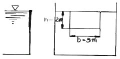
- 약 0.7 m
- 약 1.1 m
- 약 1.3 m
- 약 1.5 m
(정답률: 46%)
58. 지름 20 cm인 구의 주위에 밀도가 1000 kg/m3, 점성계수는 1.8×10-3 Pa·s 인 물이 2 m/s의 속도로 흐르고 있다. 항력곗가 0.2인 경우 구에 작용ㅇ하는 항력은 약 몇 N인가?
- 12.6
- 200
- 0.2
- 25.12
(정답률: 40%)
59. 길이 100 m, 속도 18 m/s인 선박의 모형실험을 길이 5 m인 모형선으로 프루드(Froude)상사가 성립되게 실험하려면 모형선의 속도는 몇 m/s로 해야 하는가?
- 1.80
- 4.02
- 0.36
- 36
(정답률: 34%)
60. 바닷속 100 m까지 잠수한 잠수함이 받는 압력은 몇 kPa인가? (단, 바닷물의 비중은 1.03 이다.)
- 101
- 404
- 1010
- 4040
(정답률: 38%)
4과목: 기계재료 및 유압기기
61. 일반적인 합성수지의 공통적인 성질을 설명한 것으로 잘못된 것은?
- 가공성이 크고 성형이 간단하다.
- 열에 강하고 산, 알카리, 기름, 약품 등에 강하다.
- 투명한 것이 많고, 착색이 용이하다.
- 전기 절연성이 좋다.
(정답률: 58%)
62. 다음 중 공석강의 탄소함유량으로 가장 적합한 것은?
- 약 0.08％
- 약 0.02％
- 약 0.2％
- 약 0.8％
(정답률: 63%)
63. 다음 중 Ni-Fe 계 합금인 인바(invar)를 바르게 설명한 것은?
- Ni 35~36%, C 0.1~0.3%, Mn 0.4% 와 Fe의 합금으로 내식성이 우수하고, 상온 부근에서 열팽창계수가 매우 작아 길이측정용 표준다, 시계의 추, 바이메탈 등에 사용된다.
- Ni 50%, Fe 50% 합금으로 초투자율, 포화 자기, 전기 저항이 크므로 저출력 변성기, 저주파 변성기 등의 자심으로 널리 사용된다.
- Ni에 Cr 13~21%, Fe 6.5%를 합유한 강으로 내식성, 내열성 우수하여 다이얼게이지, 유량계 등에 사용된다.
- Ni-Mo-Cr-Fe 등을 함유한 함금으로 내식성이 우수하다.
(정답률: 53%)
64. 다음 담금질 조직 중 가장 경도가 높은 것은?
- 펄라이트
- 마텐자이트
- 솔바이트
- 트루스타이트
(정답률: 64%)
65. 다움 중 표준형 고속도 공구강의 주성분으로 옳은 것은?
- 18% W, 4% Cr, 1% V, 0.8~1.5% C
- 18% C, 4% Mo, 1% V, 0.8~1.5% Cu
- 18% C, 4% W, 1% Ni, 0.8~1.5% Al
- 18% C, 4% Mo, 1% Cr, 0.8~1.5% Mg
(정답률: 59%)
66. 표면 경화법 중 가장 편리한 방법으로 고주파 유도전류에 의하여 소요 깊이까지 급속히 가열한 다음, 급랭 하여 경화시키는 방법은?
- 침탄법
- 금속 침투법
- 질화법
- 고주파 경화법
(정답률: 74%)
67. 압연용, 롤, 분쇄기 롤, 철도 차량 등 내마멸성이 필요한 기계 부품에 사용되는 가장 적합한 주철은?
- 칠드 주철
- 구상흑연 주철
- 회 주철
- 펄라이트 주철
(정답률: 58%)
68. 다음 중 경화된 재료에 인성을 부여하기 위해서 A1 변태점이하로 재가열하여 행하는 열처리는?
- 침탄법
- 담금질
- 뜨임
- 질화법
(정답률: 58%)
69. 다음 중 강의 상온 취성을 일으키는 원소는?
- P
- Si
- S
- Cu
(정답률: 59%)
70. 5~20%의 Zn의 황동을 말하며, 강도는 낮으나 전연성이 좋고 색깔이 금색에 가까우므로, 모조 금이나 판 및 선 등에 사용되는 구리합금은?
- 톰백
- 7:3 황동
- 6:4 황동
- 니켈 황동
(정답률: 55%)
71. 보기와 같은 공유압 기호가 나타내는 것은 무엇인가?
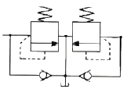
- 파일럿 작동형 시퀀스 밸브
- 카운터 밸런스 밸브
- 무부하 릴리프 밸브
- 브레이크 밸브
(정답률: 30%)
72. 다음 보기의 회로는 A,B 두 실린더를 순차적으로 작동이 행하여지는 회로이다. 무슨 회로인가?
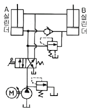
- 언로더 회로
- 디컴프레션 회로
- 시퀜스 회로
- 카운터 밸런스 회로
(정답률: 43%)
73. 유압 장치의 배관, 밸브, 계기류 등을 급격한 서지압으로부터 보호하기 위하여 설치하는 것은?
- 디퓨져
- 엑셀레이터
- 액추에이터
- 어큐물레이터
(정답률: 77%)
74. 다음 보기와 같은 유압기호가 나타내는 것은 무엇인가?
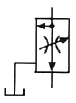
- 가변 교축 밸브
- 무부하 릴리프 밸브
- 직렬형 유량조정 밸브
- 바이패스형 유량조정 밸브
(정답률: 48%)
75. KS 유압 및 공기압 용어 중 전자석에 의한 조작 방식은?
- 인력 조작
- 기계적 조작
- 파일럿 조작
- 솔레노이드 조작
(정답률: 70%)
76. 다음 중 유량조절밸브에 의한 속도 제어회로를 나타낸 것이 아닌 것은?
- 미터 인 회로
- 블리드 오프 회로
- 미터 아웃 회로
- 카운터 회로
(정답률: 60%)
77. 다음 중 유압 작동유의 구비 조건이 아닌 것은?
- 운전온도 범위에서 적절한 점도를 유지할 것
- 연속 사용해도 회학적, 물리적 성질의 변화가 적을 것
- 녹이나 부식 발생을 방지할 수 있을 것
- 동력을 확실이 전달하기 위해서 압축성일 것
(정답률: 71%)
78. 다음 중 유압장치의 단점인 것은?
- 작은 힘으로 큰 힘을 얻을 수 있다.
- 외전 운동과 직선 운동이 자유로우며 원격조작이 가능하다.
- 유량을 조절하여 무단 변속운전을 할 수 있다.
- 유압유는 온도의 영향을 받기 쉽다.
(정답률: 74%)
79. 토출압력이 70 kgf/cm2, 토출량은 50 ℓ/min 인 유압 펌프용 모터의 1분간 회전수는 얼마인가? (단, 펌프 1회전당 유량은 Qn = 20 cc/rev 이며, 효율은 100 % 로 가정한다.)
- 1250
- 1750
- 2250
- 2500
(정답률: 28%)
80. 유압 잭(jack)은 다음 중 어느 것을 이용한 것인가?
- 베르누이 정리
- 보일 샬의 법칙
- 레이놀즈의 이론
- 파스칼의 원리
(정답률: 56%)
5과목: 기계제작법 및 기계동력학
81. 입도가 작고 연한 숫돌을 작은 압력으로 공작물 표면에 가압하면서 공작물에 이송을 주고 또 숫돌을 좌우로 진동시키면서 가공하는 방법은?
- 래핑(Lapping)
- 호닝(Honing)
- 숏 피닝(Shot Peening)
- 슈퍼 피니싱(Super finfshing)
(정답률: 32%)
82. 피측정물을 확대 관측하여 복잡한 모양의 윤곽, 좌표의 측정, 나사 요소의 측정 등과 같이 단독 요소의 측정기로는 측정할 수 없는 부분을 측정할 때 가장 적합한 것은?
- 피치 게이지
- 나사 마이크로 미터
- 공구 현미경
- 센터 게이지
(정답률: 46%)
83. 사인바(sine bar)에 대한 설명 중 틀린 것은?
- 45° 각도초과를 측정할 때, 오차가 급격히 커진다.
- 사인바는 삼각함수를 이용하여 각도 측정을 한다.
- 하이트 게이지와 함께 사용해 오차를 보정할 수 있다.
- 호칭은 양 롤러간이 중심거리로 나타낸다.
(정답률: 35%)
84. 주조에서 도가니로의 규격으로 옳은 것은?
- 1시간에 용해할 수 있는 구리의 중량으로 표시한다.
- 1회에 용해할 수 있는 구리의 중량으로 표시한다.
- 1시간에 용해할 수 있는 주철의 중량으로 표시한다.
- 1회에 용해할 수 있는 주철의 중량으로 표시한다.
(정답률: 30%)
85. 가스용접에서 산소와 아세틸렌의 혼합량에 따라 여러 종류의 화염이 생긴다. 이 중 틀린 것은?
- 탄화성 화염
- 산화성 화염
- 융화성 화염
- 중성 화염
(정답률: 12%)
86. 프레스를 이용한 단조에서 유효 단조 면적이 150cm2, 가공재료의 변형저항이 20 kgf/mm2, 기계효율을 80%로 하면 프레스의 용량(ton)은?
- 37500
- 3750
- 37.5
- 375
(정답률: 34%)
87. 지름 91mm의 강봉을 회정수 700 rpm으로 선삭하는 데 절삭저항의 주분력이 75kgf이다. 이 때의 기계적 효율이 80%이라고 하면 여기에 공급되어야 할 동력은 몇 PS 인가?
- 약 2.56
- 약 4.17
- 약 6.56
- 약 8.17
(정답률: 34%)
88. Ms점 이하인 100~200℃에서 항온 유지한 후에 공랭하는 열처리로서 오스테나이트에서 마텐자이트와 베이나이트의 혼합조직을 얻는 열처리 방법을 무엇이라 하는가?
- 오스템퍼링(austempering)
- 마템퍼링(martempering)
- 타임 퀜칭(time quenching)
- 마퀜칭(marquenching)
(정답률: 42%)
89. 선반 작업을 할 때 쓰이는 공구 또는 부속 장치가 아닌 것은?
- 돌리개
- 맨드릴
- 센터드릴
- 아버
(정답률: 43%)
90. 다이에 아연, 납, 주석 등의 연질금속을 넣고 펀치에 타격을 가하여 길이가 짧은 치약튜브, 약품튜브 등을 제작하는 압출은?
- 직접 압출
- 간접 압출
- 열간 압출
- 충격 압출
(정답률: 60%)
91. 두 질점의 완전소성충돌에 대한 설명 중 틀린 것은?
- 반발계수가 영이다.
- 두 질점의 전체에너지가 보존된다.
- 두 질점의 전체운동량이 보존된다.
- 충돌 후, 두 질점의 속도는 서로 같다.
(정답률: 39%)
92. 그림과 같은 진동계에서 하중 W는 22.68 N, 댐핑계수 c는 0.⑤79 N·s/cm, 스프링정수 k가 0.357 N/cm, 중력가속도 g가 980.7 cm/s2일 때 댐핑비(damping ratio) 는?
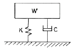
- 0.19
- 0.22
- 0.27
- 0.32
(정답률: 52%)
93. 그림과 같이 일단이 수직으로 매달려서 진자와 같이 한평면 내에서 진동하는 가늘고 긴 막대의 고유 주기는? (단, 막대의 질량은 m 이고 길이는 L이다.)
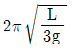
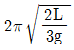
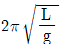
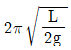
(정답률: 20%)
94. 감쇠비가  인 감쇠 강제 진동에서 최대 진폭이 생기는 진동수비 (γp)를 바르게 나타낸 것은?
인 감쇠 강제 진동에서 최대 진폭이 생기는 진동수비 (γp)를 바르게 나타낸 것은?
- γp=1
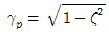
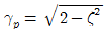
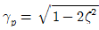
(정답률: 14%)
95. 스프링의 변위가 x 일 때 스프링상수가 k인 스프링의 위치에너지는?
- kx
- kx2
(정답률: 43%)
96. 공이 수직 상 방향으로 9.81 m/s의 속도로 던져졌을 때 최대 도달 높이는 몇 m인가?
- 4.9
- 9.8
- 14.7
- 19.6
(정답률: 39%)
97. 다음 그림과 같이 질량 m이 동일 길이의 줄에 매달려 있다. 갑자기 한 가닥을 절단했을 때 줄에 걸리는 힘은? (단, 줄의 질량 및 강성은 무시한다.)
- mg
- 0
(정답률: 24%)
98. 자동차의 엔진이 시동 후 3초에서 1500rpm으로 회전되었을 때 이 엔진의 각가속도는 몇 rad/s2 인가?
- 500.0
- 25.0
- 157.2
- 52.3
(정답률: 43%)
99. 90 kg의 질량을 가진 기계가 스프링 상수 3600 kN/m인 스프링과 감쇠기 위에 받쳐 있고 조화 가진력 Fosinωt가 작용한다면 공진 진폭은 몇 cm 인가? (단, Fo는 50 N이고, 점성감쇠계수 c는 5 N·s/m이다.)
- 5
- 7
- 1
- 1.5
(정답률: 24%)
100. 질량이 5 kg인 물체를 정지상태에서 100 m/s의 속도로 가속하였다. 이 물체에 주어진 일은 몇 kJ 인가?
- 2.5
- 25
- 5
- 50
(정답률: 36%)
여기서 J는 극관성, R은 원형축의 반지름이다.
J = π/2 * (R^4 - r^4) = π/2 * (2^4 - 1^4) = 15.7 cm^4
R = (4 + 2) / 2 = 3 cm
따라서 M = 10 * 15.7 / 3 = 52.3 Nㆍm
하지만 보기에서는 정답이 118이다. 이는 단위가 다르기 때문이다. 문제에서는 단위를 Nㆍm으로 주지 않았기 때문에, 단위 변환을 해주어야 한다.
1 Nㆍm = 10^3 N㎝ = 10^7 dyne㎝
따라서 M = 52.3 * 10^7 / 10^3 = 523000 dyne㎝ = 523 N㎝
따라서 정답은 118이 아니라 52.3이다.